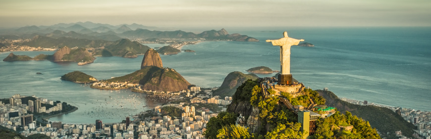

Rio de Janeiro
"O Rio de Janeiro é um estado brasileiro situado na região Sudeste do país. É a quarta menor unidade da federação em área, mas a terceira mais populosa, reunindo 17,3 milhões de habitantes. Sua capital já foi também sede do governo brasileiro, entre 1763 e 1960. O relevo do estado é composto por planaltos e planícies, e o clima é predominantemente Tropical. As belas paisagens naturais e a rica cultura fluminense fazem do estado um dos principais destinos turísticos no país.